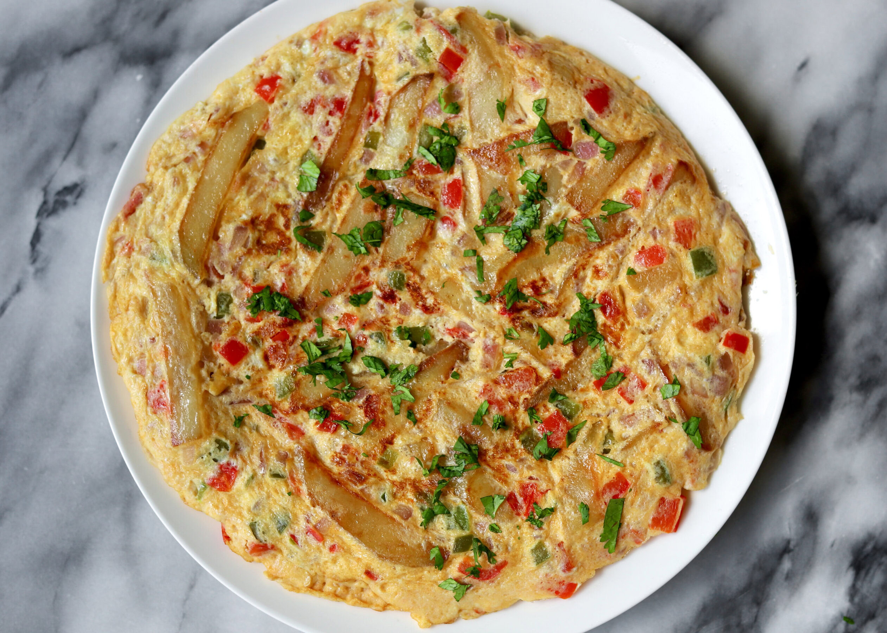

CHIPSI

Description
This is a local fine recepie of potatoes that is commonly used in Tanzania. It is a local
favourite among the Tanzanians. Here is its recepie.
INGRIDIENTS
- potatoes
- salt
- cooking oil
- eggs
STEPS TO MAKE
- prepare the potatoes
- slice the potatoes as if making french fries then fry them
- break and mix the eggs in a separate bowl
- on top of the drenched fries add the eggs
- let it sit for some time then turn upside down
- serve while hot
go back